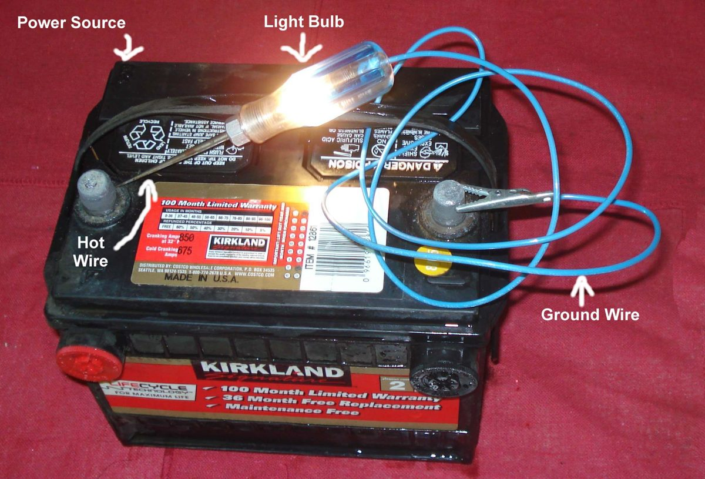

One indicator, one side, or all the indicators stay dark when you use the switch. The pattern tells you where to look. One lamp out: its bulb, holder or earth. One side out: the switch contact for that side, or that side's wire. All out: the flasher relay, its fuse, its power feed or the battery. The K-Light fault chart uses the same three branches (PDF p. 44).
Is it safe to ride?
With care, by day, using clear hand signals. Other road users rely on indicators, so fix them before riding in traffic or at night.
Quick checks first
- Which lamps fail: one, one side, or all?
- Does the horn work? The K-Light chart uses the horn to check the battery: if the horn is weak too, charge the battery first (PDF p. 44).
- Does the dashboard indicator lamp flash or stay dark?
- Are the hazard lights (if fitted) also dead?
- Was an indicator broken in a fall, or were LED indicators fitted recently?
Diagnose it step by step
1Are all the indicators dead?
- Yes: go to step 4.
- Only one side, or one lamp: go to step 2.
2. Is the bulb broken in the dead lamp? Remove the lens and bulb (Replace a bulb). K-Light 125 indicator bulb: R10W (PDF p. 99). Set the multimeter to continuity (beep) and probe the bulb's base and tip.
- No beep: replace the bulb.
- Bulb good (or it is an LED unit): go to step 3.
3. Is power reaching the lamp? Bulb out. Key on, switch to the dead side. Meter on DC volts (V with a straight line, 20 V range). Black probe on frame metal, red probe on the holder's centre contact. The reading should pulse up and down as the flasher works, or show battery voltage if it is steady.
- Voltage present: the lamp's earth is bad. Clean the holder and earth wire: Clean and tighten earth connections. (K-Light chart: poor lampholder earth, PDF p. 44.)
- No voltage at one lamp only: its wire or plug is broken: Clean and seal electrical connectors.
- No voltage at both lamps on that side: the switch contact for that side is bad. Go to step 6.
4. Is the battery good and the flasher fuse intact? Check the battery voltage, then the fuse: Check fuses and relays.
- Fuse blown: replace once. If it blows again: Fuse keeps blowing.
- Both good: go to step 5.
5. Is the flasher relay working? Follow Test the indicator flasher relay. It checks power into the flasher, then bypasses it with a fused jumper lead.
- Lamps light steadily when bypassed: the flasher is faulty. Replace it with the correct type (bulb or LED).
- Still dark when bypassed: go to step 6.
6. Does the indicator switch work? Key off. Unplug the switch connector. Meter on continuity. On the K-Light 125, left indicator joins black and blue/red on the left pod; right indicator joins orange and green/white on the right pod (PDF p. 105). Operate the switch and probe the pair.
- No beep: Clean a handlebar switch.
- Beep: the wire between flasher, switch and lamps is broken. Trace it with Test a lighting circuit.
7. CAN-bus bike with indicators run by the dashboard or a control unit? Check bulbs or LED units, fuses and connectors only. Then a dealer must read the control unit's fault codes.
Causes, most likely first
| Cause | How to confirm | Fix |
|---|---|---|
| Blown bulb (one lamp) | No continuity | Replace a bulb |
| Poor lamp earth or holder (one lamp) | Power at holder, lamp dark | Clean and tighten earth connections |
| Dirty indicator switch (one side) | No continuity in that position | Clean a handlebar switch |
| Failed flasher relay (all) | Lamps light when bypassed | Test the indicator flasher relay |
| Blown fuse or flat battery (all) | Meter test | Check fuses and relays |
| Broken wire or connector | No continuity along wire | Test a lighting circuit |
Reference values (K-Light 125)
| Item | Value | Source |
|---|---|---|
| Indicator bulb | R10W | PDF p. 99 |
| Left indicator switch contacts | black to blue/red | PDF p. 105 |
| Right indicator switch contacts | orange to green/white | PDF p. 105 |